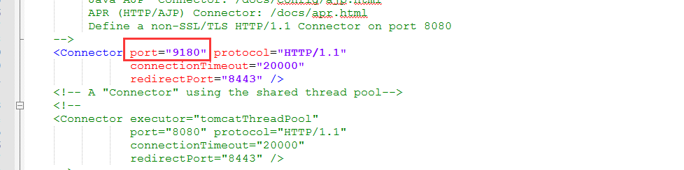
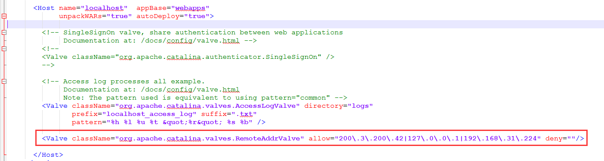

服务器环境搭建步骤
- 1. 新建服务器用户，配置JDK，需要JDK版本1.8+
- 2. 下载Tomcat-9.0.1.zip，上传到服务器，使用【unzip Tomcat-9.0.1.zip】命令解压文件
- 3. 【cd】进入Tomcat-9.0.1目录执行【mv * ../】将所有文件移动到根目录，然后【rmdir】删除空目录Tomcat-9.0.1
- 4. 目录说明如下：
- backup --备份目录
- bin --脚本存放目录，常用脚本：startup.sh-启动服务、stop.sh-停止服务、tl.sh-查看日志
- conf --Tomcat配置目录，只有server.xml需要配置，主要是配置浏览器访问端口和ip过滤
- h2db --vom-kite工程数据库存放目录
- lib --Tomcat依赖jar，也可以把所有应用都依赖的公共jar放到这个目录下，对所有应用都生效
- logs --日志目录
- temp、work --Tomcat依赖目录，不需要任何改动，不要删除
- webapps --应用部署目录，把war包放到这里即可部署
- webapps/ROOT --配置直接输入ip和端口就可以访问应用
- 5. 将vom-kite.war和应用的war上传到/webapps目录下
- 6. 执行startup.sh启动服务，然后执行tl.sh查看日志，如果出现配置错误，先执行stop.sh停止服务，然后去改配置，再起服务
- 7. 成功启动这服务部署完毕
server.xml配置：
- 1. 浏览器访问端口配置
- 
- 2. 过滤ip配置
- 
- allow="" 为允许ip，配置多个需要用正则表达式，可参考如下配置。deny="" 为禁止ip
- <Valve className="org.apache.catalina.valves.RemoteAddrValve" allow="200\.3\.200\.42|127\.0\.0\.1|192\.168\.31\.224" deny=""/>